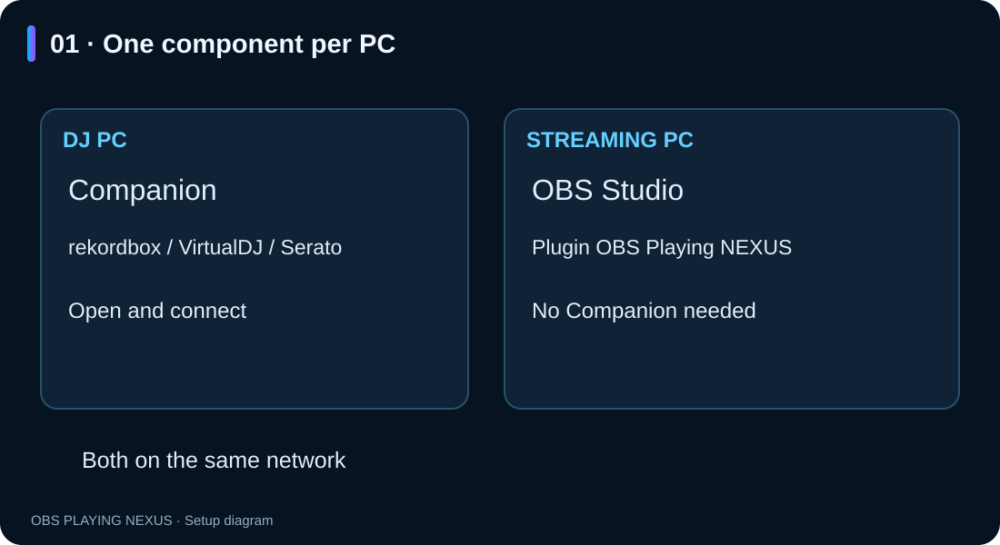
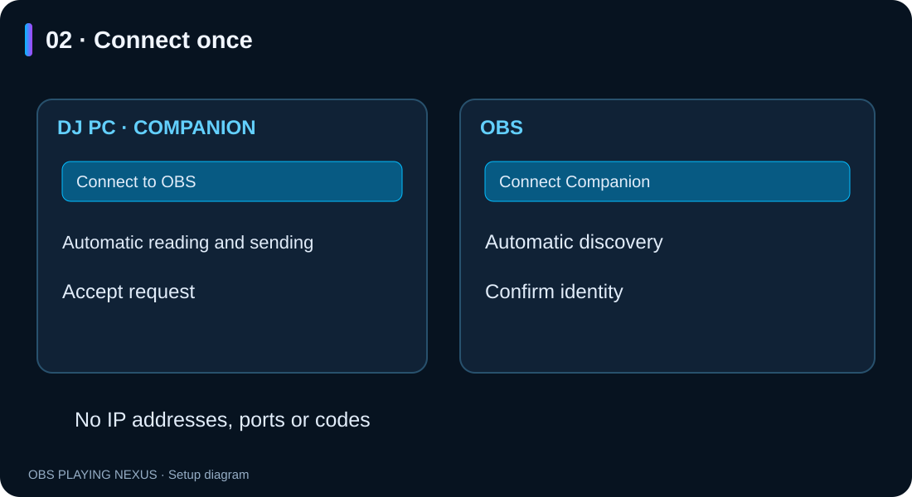
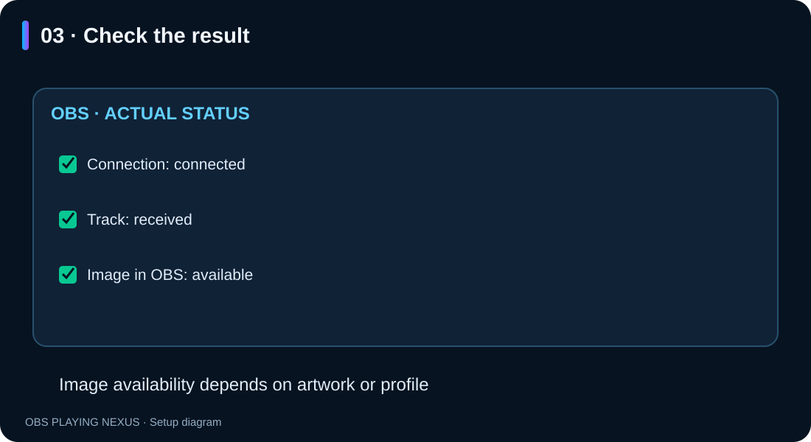

OBS Playing NEXUS — connect your two PCs
Illustrated guide · Windows · RC3.4
Español · English
Double-click README.en.html to read the illustrated guide offline. Keep the imagenes folder beside the document. The interface button labels below are shown in Spanish so you can find them in the application.
1. Install on each PC
- DJ PC: install Companion and open your DJ application.
- Streaming PC: install the OBS Playing NEXUS plugin and open OBS Studio 32.x x64.
- Companion is only needed on the DJ PC.
- Both computers must be on the same home network.
- Update both components to RC3.4 to use this assistant.
The same installer offers a component for each computer. Companion creates a desktop shortcut. Close the corresponding application before updating; Windows may request administrator permission.

2. Connect for the first time
- On the DJ PC, open Companion and press Conectar con OBS (Connect to OBS). Keep this window open.
- On the streaming PC, add an OBS Playing NEXUS source and press Conectar Companion (Connect Companion) in its properties. Disable the fictional test track if enabled.
- OBS searches automatically. If it finds only one DJ PC, it selects it. Check that its identity matches the one shown in Companion, tick the confirmation and press Conectar este PC (Connect this PC).
- Accept the request in Companion. The OBS window shows the actual connection, track and image status.
There are no codes to copy or IP addresses and ports to enter. Companion has no streaming-PC mode to select. The OBS button automatically switches the source to the paired DJ PC.

The assistant automatically enables local track reading and sending on launch. These are already enabled when opening a new Companion installation. You do not need to tick «Ver canción en este PC» or «Iniciar envío automáticamente» to connect. If multiple DJ applications are playing, select the one you want in the same window.
If Windows requests network permission, confirm it in Windows. Pairing stays open for two minutes. If it expires, press Volver a buscar conexión in Companion and Buscar de nuevo in OBS. Closing the DJ assistant closes the pairing window; already connected computers keep working.
3. Daily use and checks
Open Companion on the DJ PC and OBS on the streaming PC. Pairing is saved and the active source automatically tries to reconnect. Automatic startup applies when opening Companion; it does not configure Windows startup. Stop remains available to stop sending during the current session.
Play music and change tracks. The OBS assistant separately reports the actual connection, received track and available image. A connection can work even when there is no music or artwork yet.

Choose a PRO style and enable the artwork/profile-image option to display artwork. When artwork is unavailable, you can enable the Twitch profile fallback with your Twitch account connected in OBS. Classic styles have no artwork. Companion sends metadata and images, not audio.
4. Serato
Enable the OBS Playing device in Setup → Expansion Packs → External Control inside Serato. This permission must be confirmed in Serato. If the device is missing, check that Bonjour Service is installed and running on the DJ PC (Servizi → In esecuzione in Italian Windows). Companion shows a message when Bonjour is missing or does not respond.
5. Replace or remove a paired PC
In OBS press Conectar Companion → Cambiar PC DJ and follow the same assistant. Opciones avanzadas → Olvidar vinculación anterior removes the saved destination and stops its connection. To withdraw access from an old streaming PC, use Revocar vinculación seleccionada in Companion settings on the DJ PC. Forgetting the destination in OBS does not revoke its permission on the DJ PC.
6. Troubleshooting
| Problem | Check |
|---|---|
| OBS cannot find Companion | Same network, Companion running and «Conectar con OBS» open. Avoid guest networks and VPN routes between the PCs. |
| Windows blocks the connection | On your trusted private home network, allow obs-playing-companion.exe through Firewall → Allow an app → Private. The installer does not add firewall rules. |
| No track in Companion | Play music and select the DJ application in the assistant if automatic detection is ambiguous. For Serato, check External Control and Bonjour. |
| Connected but no track | Check the track in Companion first; this does not necessarily mean a network failure. |
| Track arrives but no image | Check artwork in Companion and the image options of a PRO style in OBS. |
| A sample song stays visible | Disable the fictional test track in OBS. |
| An IP change prevents reconnection | Press «Cambiar PC DJ» and search again. |
Default Companion path for the firewall permission:
%LOCALAPPDATA%\OBS NEXUS\OBS Playing Companion\obs-playing-companion.exe7. Image diagnostics
Press Diagnóstico de imágenes in the source properties. It distinguishes DJ artwork, the Twitch profile lookup and the image prepared for drawing. It does not show credentials or file paths.
A failed Twitch lookup has up to three retries (after 5, 15 and 45 seconds), with no lookups while the source is hidden. For HTTP 401, reconnect your Twitch account in OBS and press Recargar imagen de perfil.
If Companion also lacks artwork, check whether the image is embedded in the local file and its format. A thumbnail in Serato does not prove the reader can access it; this release does not certify artwork from streaming services.
When requesting help, provide versions and the visible message. Never share pairing codes, .pcs profiles, passwords or credentials.
The illustrations are assistant diagrams, not captures of a physical two-PC test.